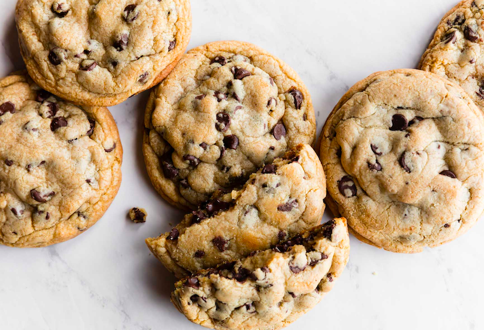

<!DOCTYPE html>
  <html>
    <head>
      <title> Chocolate Chip Cookie Recipe </title>
      <meta charset="UTF-8">
      <meta name="description" content="chocolate chip cookie recipe">
      <meta name="author" content="Lily Johnson">
      <meta name="viewport" content="width=device-width, initial-scale=1.0">
    </head>
  </html>

<body>

  
  <h1> Chocolate Chip Cookies </h1>

  <h2> Ingredients </h2>
    <ul>
      <li> <b> 1/2 cup </b> <cite> melted </cite> butter </li>
      <li> <b> 1/3 cup </b> granulated sugar </li>
      <li> <b> 1/2 cup </b> brown sugar </li>
      <li> <b> 1 </b> egg </li>
      <li> <b> 1 teaspoon </b> vanilla extract </li>
      <li> <b> 1/2 teaspoon </b> baking soda </li>
      <li> <b> 1/2 teaspoon </b> salt </li>
      <li> <b> 1 1/2 cups </b> flour </li>
      <li> <b> 1 1/2 cups </b> chocolate chips </li>
    </ul>
<!-- This is a comment between the ingredients and directions -->
  <h2> Directions </h2>
    <ol>
      <li> Preheat oven to 350°F. </li>
      <li> Mix butter, granulated sugar, and brown sugar in a large bowl. </li>
      <li> Add egg and vanilla extract. </li>
      <li> Mix in baking soda and salt. </li>
      <li> Add chocolate chips. </li>
      <li> Line a cookie sheet with parchment paper. </li>
      <li> Space balls of cookie dough 2 inches apart on cookie sheet. </li>
      <li> Bake for 11-15 minutes. </li>
    </ol>

  <h2> Contact me </h2>
    <a href="mailto:lily2.johnson@umconnect.umt.edu">E-mail me!</a>
      <address>
        32 Campus Drive <br>
        Missoula, MT 59812
    </address>

  <h3> Original Recipe </h3>
    <a href="https://www.crazyforcrust.com/best-chocolate-chip-cookie-recipe/" target="_blank">Best Chocolate Chip Cookie Recipe</a>

</body>
